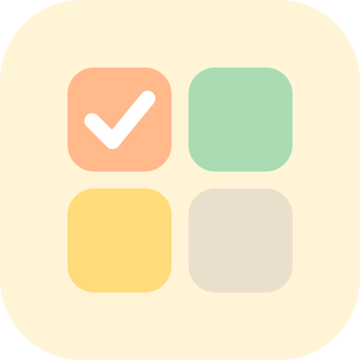

ProelloDis « puis » ou « ensuite » entre deux tâches. Tu peux ajouter « urgent », « important », « entre jeudi et vendredi »…
Corrige les mots mal compris, ajoute ou retire ce que tu veux, puis valide.
Quel genre d'utilisateur es-tu ?
Ton profil donne des catégories adaptées à tes tâches. Tu pourras les renommer, en ajouter ou en retirer à tout moment.